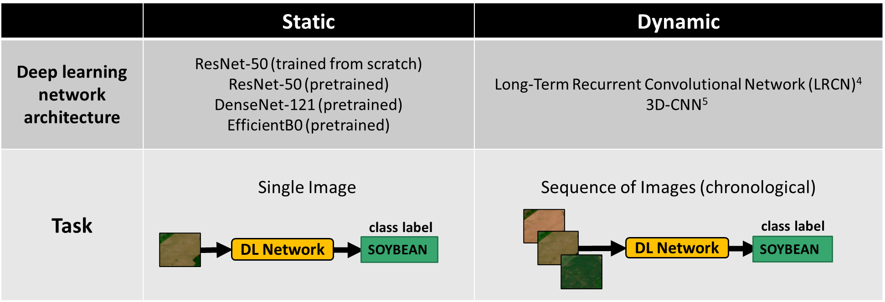

We present two classification experiments performed using the 2019 version of the dataset to infer the main crop types present in each image. In the first experiment, static classification, we treated each individual image as a training instance (static image classification). In the second experiment, dynamic classification we explored the use of a temporal image series as an input. s 
Tables showing results for both experiments are figured below.
[Table for Static Classification Results]
[Table for Dynamic Classification Results]
| Models/Metrics | Precision | Recall | F1-Score | Accuracy |
|---|---|---|---|---|
| LRCN-64 (RGB) | 0.610 ± 0.017 | 0.637 ± 0.015 | 0.617 ± 0.013 | 0.774 ± 0.014 |
| LRCN-64 (GNDVI) | 0.030 ± 0.000 | 0.100 ± 0.000 | 0.040 ± 0.000 | 0.277 ± 0.006 |
| LRCN-64 (NDVI) | 0.030 ± 0.000 | 0.100 ± 0.000 | 0.040 ± 0.000 | |
| LRCN-64 (NDVI45) | ||||
| LRCN-64 (OSAVI) | ||||
| LRCN-64 (PSRI) | ||||
| 3D-CNN (RGB) | ||||
| 3D-CNN (GNDVI) | ||||
| 3D-CNN (NDVI) | ||||
| 3D-CNN (NDVI45) | ||||
| 3D-CNN (OSAVI) | ||||
| 3D-CNN (PSRI) |